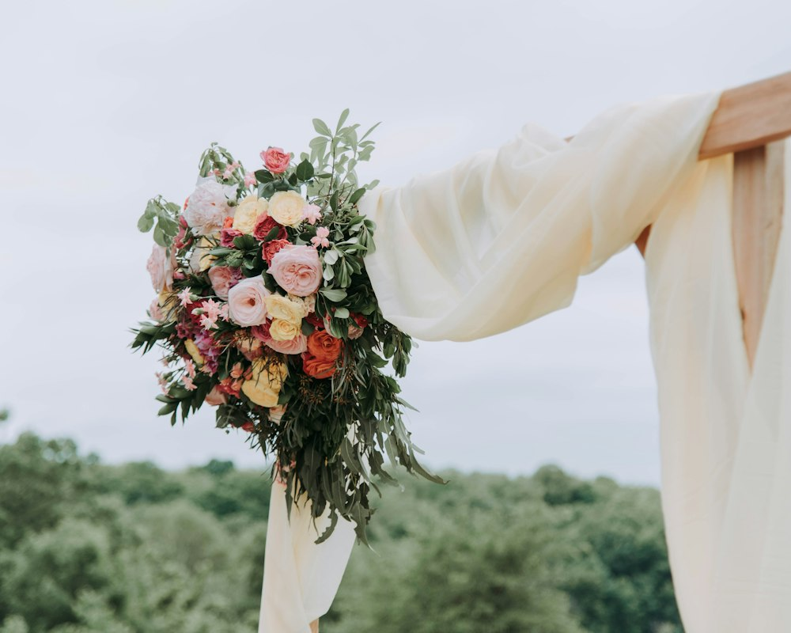
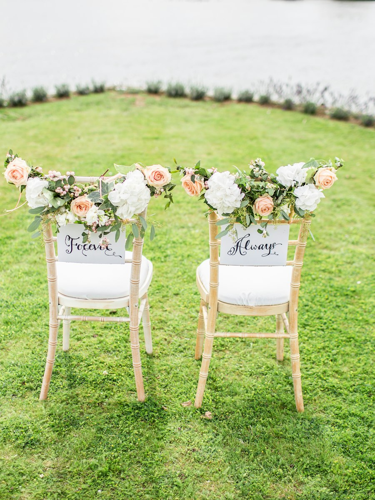
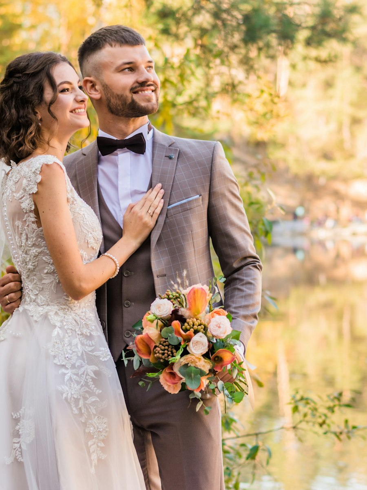

About me
Hi, Im Clauds
I’m a wedding content creator with a passion for capturing the real, unfiltered moments that make your wedding day uniquely yours. From the nervous excitement of the morning preparations to the happy tears, spontaneous laughter and unforgettable moments on the dance floor, I believe the most beautiful memories are often found in the little things you never planned.
For me, wedding content is about more than capturing how your day looked. It’s about preserving how it felt. The butterflies before walking down the aisle, the look you share when you think nobody is watching, the laughter between your favourite people and the fleeting moments that pass in the blink of an eye. These are the memories that deserve to be held onto, revisited and treasured for years to come.
My approach is natural, unobtrusive and deeply personal. I stay close enough to capture the magic as it unfolds, while allowing you to be fully present in every moment. Rather than asking you to pose or recreate a scene, I focus on documenting your day as it genuinely happens, creating photographs and films that feel authentic to you, your relationship and the atmosphere of your celebration.
Whether it’s the quiet intimacy of getting ready, the emotion of your ceremony, the beauty of all the little details or the energy of a packed dance floor, I want you to have something that brings it all rushing back. The voices, the movement, the laughter, the people you love most — the pieces of your story that make your wedding so much more than a single day.
Because long after the flowers have faded and the last song has played, your memories remain. And I want to help you relive them, exactly as they felt.
Your story, your people, your day — beautifully captured, forever remembered.


Memories
that stay
forever